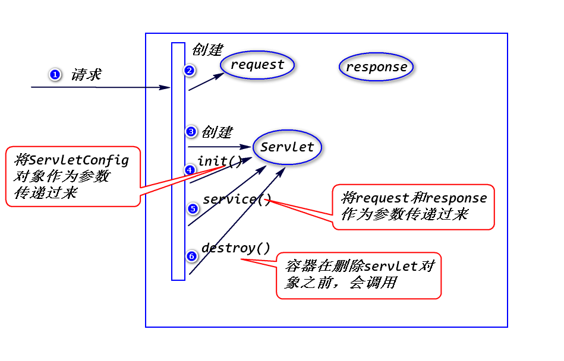
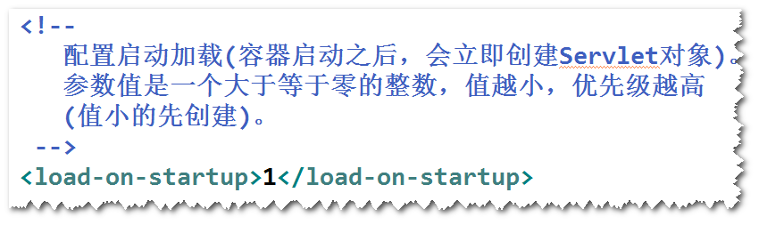
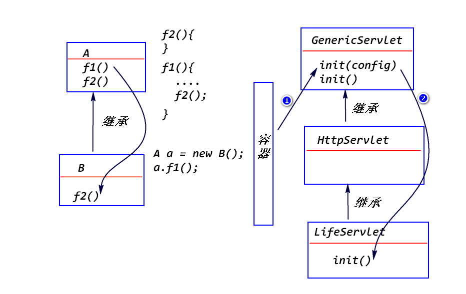
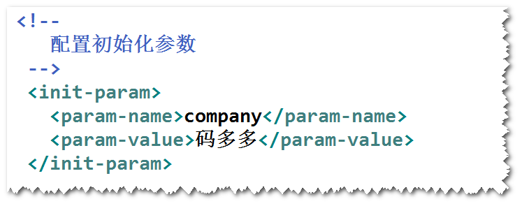
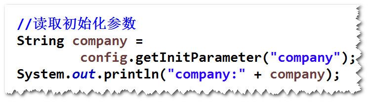
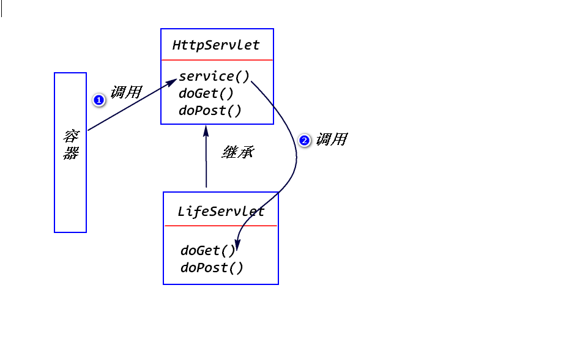

Servlet容器如何创建Servlet对象、如何对该对象进行初始化处理、 如何调用该对象的方法来处理请求、以及如何销毁该对象的整个过程。

a.什么是实例化?
容器调用Servlet的构造器，创建Servlet对象。
b.什么时候实例化?
情形1: 容器收到请求之后才创建相应的实例。
情形2: 容器启动之后，立即创建相应的实例(需要额外的配置)。

c.对于某个Servlet,容器只会创建一个实例。
a.什么是初始化?
容器调用servlet对象的init(ServletConfig config)方法。
注:
init方法只会调用一次！
b.GenericServlet已经提供了init方法的实现。
会将容器传递过来的ServletConfig对象保存下来，并且提供了
一个方法(getServletConfig)来获得该对象。
如果要实现自已的初始化处理逻辑，只需要override GenericServlet的init()方法。

c.初始化参数
step1.配置初始化参数

step2.调用ServletConfig提供的方法来读取初始化参数

a.什么是就绪?
容器调用Servlet对象的service方法来处理请求。
b.HttpServlet已经提供了service方法的实现。
该方法会依据请求类型(get请求/post请求)调用对应的doXXX
方法(比如，get请求会调用doGet方法,post请求会调用doPost
方法)。
doXXX方法只是抛出了一个异常。
开发人员有两个选择:
override HttpServlet的doXXX方法。
override HttpServlet的service方法。

a.什么是销毁?
容器在删除servlet对象之前，会调用该对象的destroy方法。
注：
该方法只会执行一次！
b. GenericServlet已经提供了destroy方法的实现。
该方法实际上什么都没有做，我们可以override该方法，来实现
自己的销毁处理逻辑。
a.Servlet接口
init(ServletConfig config);
service(ServletRequest req,ServletResponse res);
destroy()
b.GenericServlet抽象类
实现了Servlet接口中的部分方法(init,destroy)。
c.HttpServlet抽象类
继承了GenericServlet,实现了service方法。
计算BMI指数,依据身高、体重、性别来判断一个人的体重状况。 bmi指数的最大值和最小值要求使用初始化参数来配置。
<init-param> <param-name>male</param-name> <param-value>25,20</param-value> </init-param> <init-param> <param-name>female</param-name> <param-value>24,19</param-value> </init-param>
男性 max 25 min 20
女性 max 24 min 19